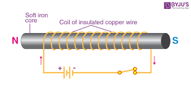

Budowa elektromagnesu
 Elektromagnes możemy określić mianem magnesu, którego pole
magnetyczne powstaje w wyniku przepływu prądu elektrycznego.
Elektromagnes możemy określić mianem magnesu, którego pole
magnetyczne powstaje w wyniku przepływu prądu elektrycznego.
Zbudowany jest ze zwojnicy, wewnątrz której umieszczono rdzeń ze stali miękkiej lub żelaza.
Elektromagnes jest tym silniejszym magnesem, im ma więcej zwojów i im większe jest natężenie prądu płynącego przez jego zwoje.
Ważną rolę odgrywa ferromagnetyczny rdzeń elektromagnesu. W jego wnętrzu powstają domeny magnetyczne, wzmacniające pole magnetyczne zwojnicy.
